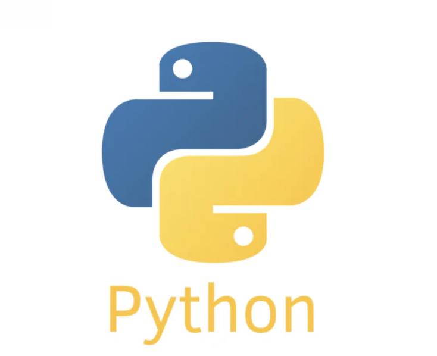
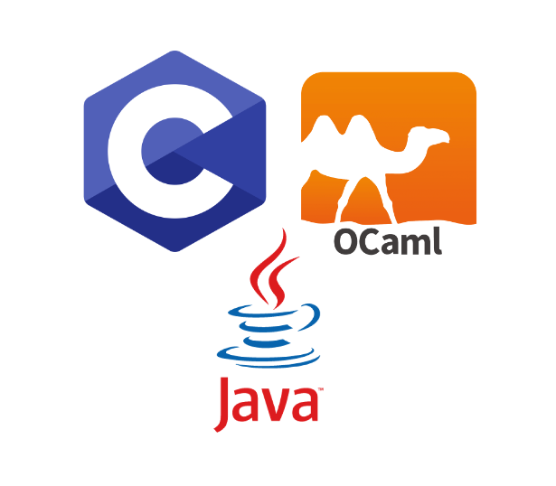

TAKERU ITO
PORTFOLIO
意識とは何か、自分とはなにか知りたい！
Projects
神経科学 (研究中)
学部で身につけた情報・数学の知見を活かして、理研CBSで神経科学を研究している
SciNotes (開発中)
手計算とプログラミングのいいところ取りの数学向けノートアプリ
KAIYOSE works 株式会社でのPoC開発
アニメ制作をAIで自動化することを目標にプロジェクトマネージャを務めた
卒業研究
齋藤博明研究室にて、アルゴリズム的な自然数関数を機械学習で予測することに挑戦。
ガロア理論ゼミ
数学サークルMaphycsの自主ゼミで、1年かけて取り組んだ
ギリア株式会社インターン
医療画像のセグメンテーション課題や画像からの3D復元といった画像処理を行いました
SKILL

Python (Pytorch/Huggingface)
卒業研究において言語モデル、ギリア株式会社では画像処理、KAIYOSE works 株式会社では拡散モデルを扱いました。

C/C++/Java/JS (React)/Ocaml/BASIC
授業などで小さい作品を作りました。
ABOUT
伊藤 武/ITO TAKERU
意識を理解したいという目標のもと、科学的発見を促進する活動に取り組んでいる。
2021年 慶應義塾大学 理工学部入学
2022年 情報工学科進学
2023年〜 ギリア株式会社インターン (2年間)
2025年 KAIYOSE works 株式会社立ち上げに参加
2025年 慶應義塾大学 情報工学科 卒業
2025年 東京大学情報理工学系研究科 入学